ARTDOM
ARTDOM is an innovative exhibition project committed to shaping the future of furniture and interior fashion trends. It serves as a dynamic platform for collaboration among brands, designers, manufacturers, and buyers. At the heart of its brand identity is the metaphor of the red line, symbolizing trust and transparency within the furniture ecosystem. This vibrant element enhances clarity and connection among stakeholders without overshadowing the showcased objects, creating a clean and cohesive visual identity.
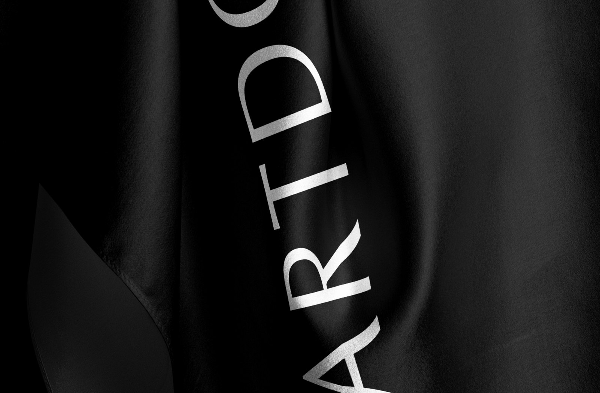
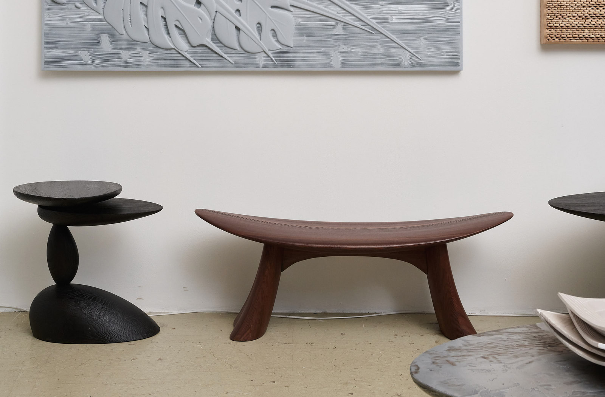
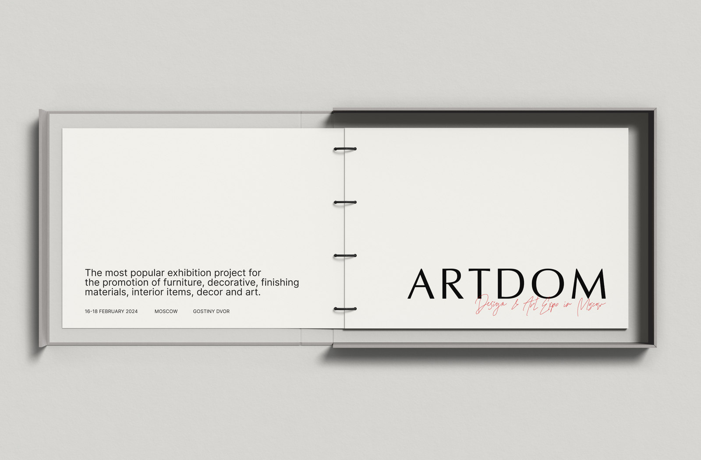
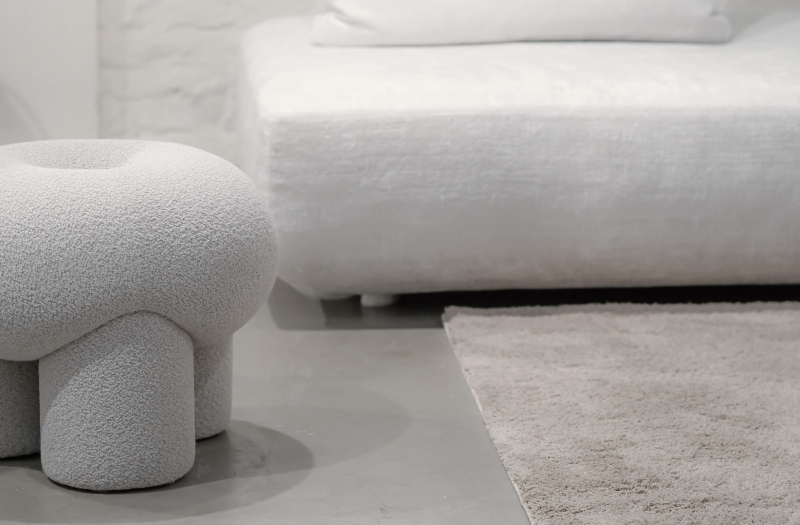
Purpose: Improve ARTDOM exhibitions by adding a European touch and a sustainable design system with a consistent Red Thread concept. Challenge: Fix the bad reputation of past exhibitions through design changes, while also making it more European and sustainable. Brand Mission: Make expo a top spot for furniture and interior trends, promoting collaboration, innovation, and European quality and sustainability. Brand Vision: Project sees a future where great design and sustainability meet, with each exhibition showcasing European craftsmanship and a consistent theme. Brand Essence: ARTDOM is about quality, sustainability, and European design, inspiring trust and credibility in the furniture industry.
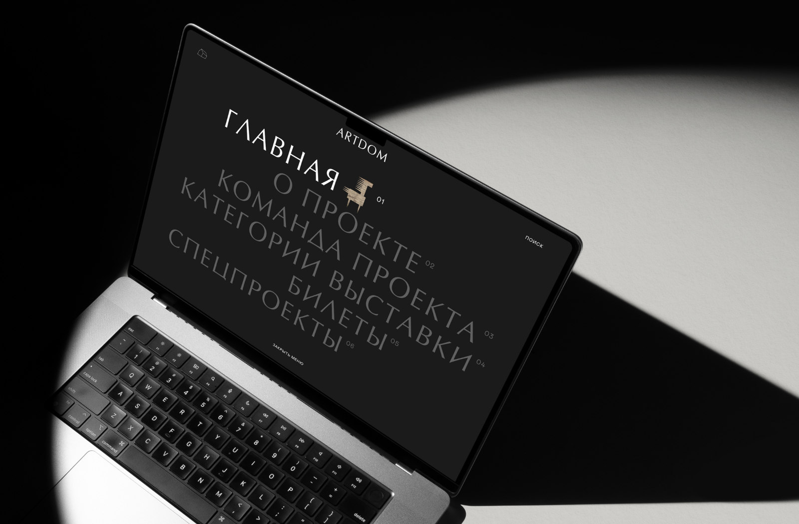
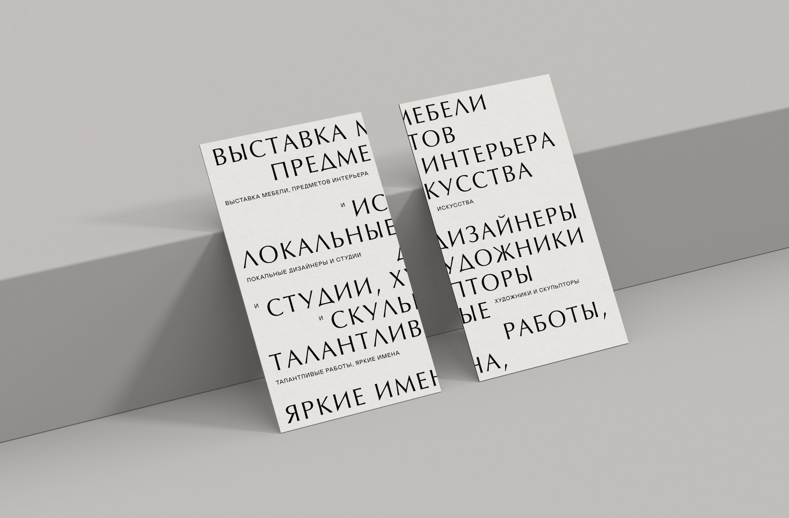
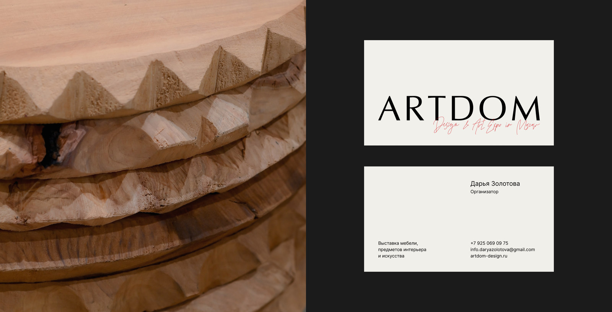
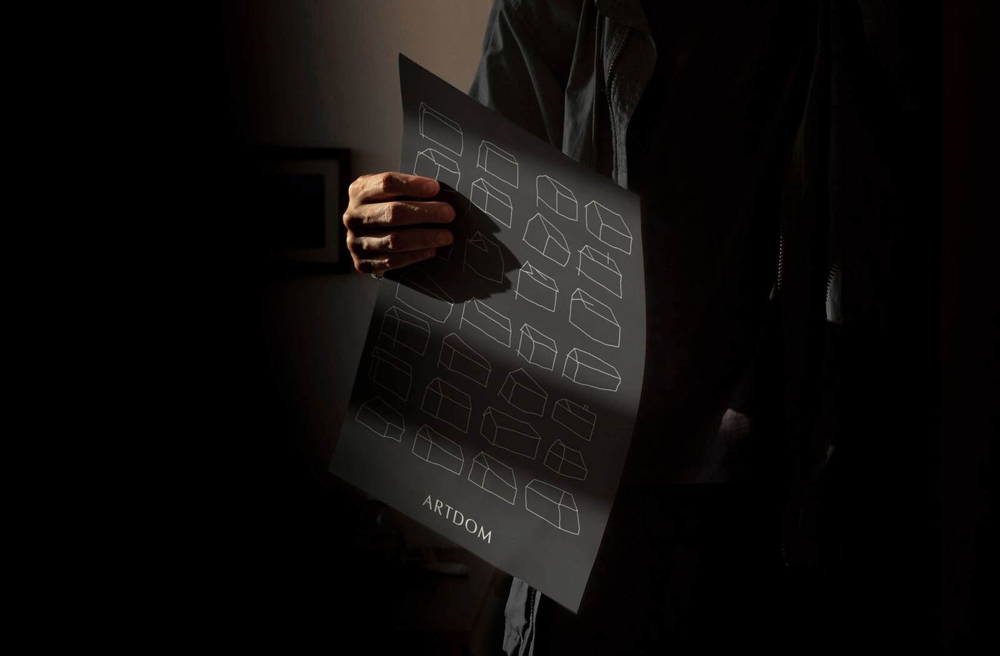
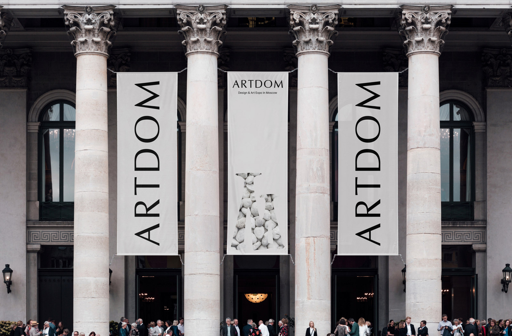
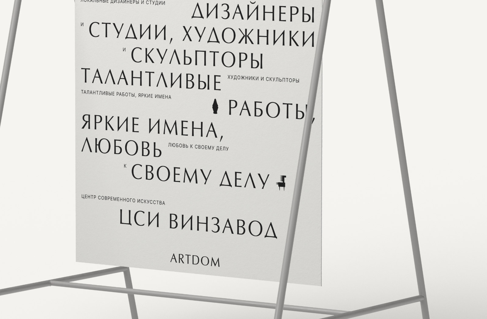
For this project, a typographic logo was developed, inspired by magazine aesthetics and luxury clothing brands. The logo turned out to be both expressive and concise, standing out against the furniture and the entire exhibition
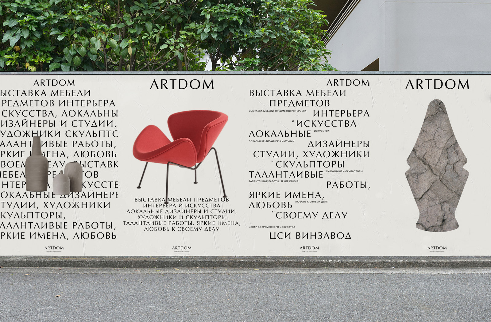
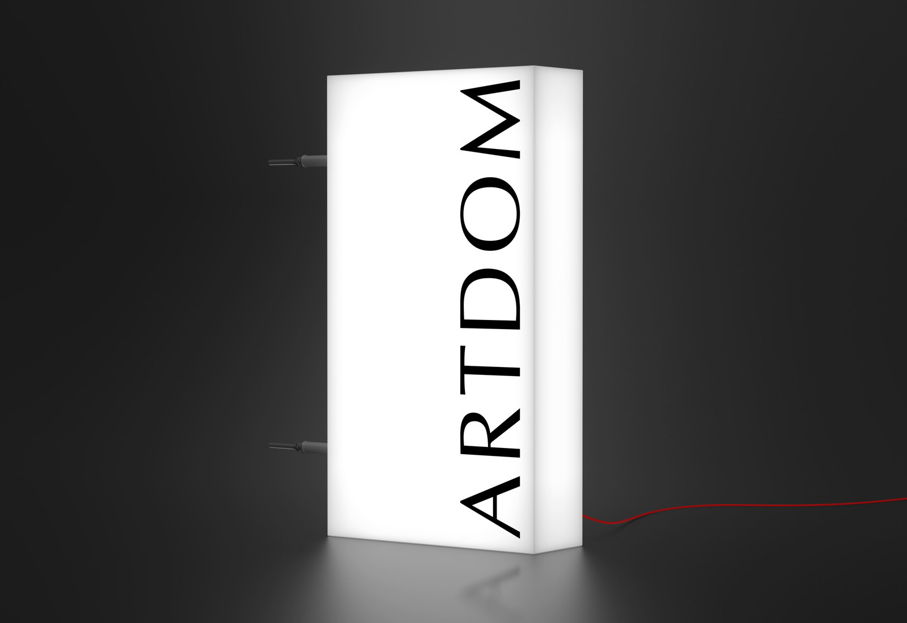
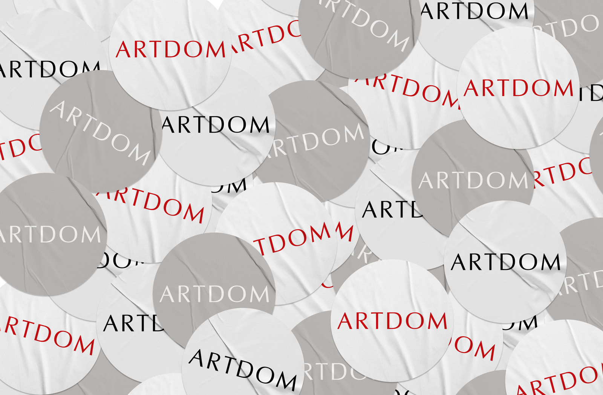